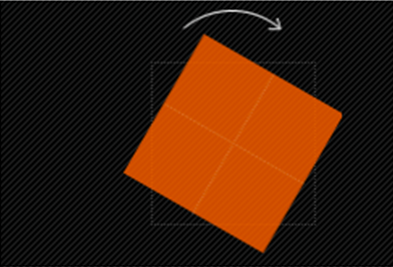
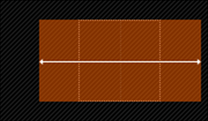
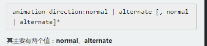

我是一个段落
我是一个段落
我是一个段落
圆角属性为border-radius，有4个值，对应的方向为左上，右上，右下，左下
box-shadow:增加阴影，支持一个或者多个
 注意：inset 可以写在参数的第一个或最后一个，其它位置是无效的。
注意：X轴偏移和Y轴偏移可以设置负数
注意：inset 可以写在参数的第一个或最后一个，其它位置是无效的。
注意：X轴偏移和Y轴偏移可以设置负数
.box_shadow{
box-shadow:4px 2px 6px #333333;
}
.box_shadow{
box-shadow:4px 2px 6px #333333 inset;
}
.box_shadow{
box-shadow:4px 2px 6px #f00, -4px -2px 6px #000, 0px 0px 12px 5px #33CC00 inset;
}

 *径向渐变将to改为at
*径向渐变将to改为at


text-overflow:ellipsis;
overflow:hidden;
white-space:nowrap;

@font-face{
font-family:字体名称；
src:字体文件在服务器上的路径。
}
p{
font-size:12px;
font-family:"my font";
/*必须项，设置@font-face中的font-family同样的值*/
}
text-shadow:X-offset Y-offset blur color;
X-Offset：表示阴影的水平偏移距离，其值为正值时阴影向右偏移，反之向左偏移；
Y-Offset：是指阴影的垂直偏移距离，如果其值是正值时，阴影向下偏移，反之向上偏移；
Blur：是指阴影的模糊程度，其值不能是负值，如果值越大，阴影越模糊，反之阴影越清晰，如果不需要阴影模糊可以将Blur值设置为0；
Color：是指阴影的颜色，其可以使用rgba色。
文本阴影text-shadow
text-shadow:1px 2px 1px red;
设置背景元素图片的原始起始位置
语法：
background-origin:border-box/padding-box/content-box
background-clip ： border-box | padding-box | content-box | no-clip
参数分别表示从边框、或内填充，或者内容区域向外裁剪背景。no-clip表示不裁切，和参数border-box显示同样的效果。backgroud-clip默认值为border-box。
background-size:auto | <长度值> |
<百分比> | cover | contain;
说明：
1、auto：默认值，不改变背景图片的原始高度和宽度；
2、
<长度值>：成对出现如200px 50px，将背景图片宽高依次设置为前面两个值，当设置一个值时，将其作为图片宽度值来等比缩放；
3、
<百分比>：0％~100％之间的任何值，将背景图片宽高依次设置为所在元素宽高乘以前面百分比得出的数值，当设置一个值时同上；
4、cover：顾名思义为覆盖，即将背景图片等比缩放以填满整个容器；
5、contain：容纳，即将背景图片等比缩放至某一边紧贴容器边缘为止。
多重背景，也就是CSS2里background的属性外加origin、clip和size组成的新background的多次叠加，缩写时为用逗号隔开的每组值；用分解写法时，如果有多个背景图片，而其他属性只有一个（例如background-repeat只有一个），表明所有背景图片应用该属性值。
语法缩写如下
background ： [background-color] | [background-image] | [background-position][/background-size] | [background-repeat] | [background-attachment] | [background-clip] | [background-origin],...
可以把上面的缩写拆解成以下形式：
background-image:url1,url2,...,urlN;
background-repeat : repeat1,repeat2,...,repeatN;
backround-position : position1,position2,...,positionN;
background-size : size1,size2,...,sizeN;
background-attachment : attachment1,attachment2,...,attachmentN;
background-clip : clip1,clip2,...,clipN;
background-origin : origin1,origin2,...,originN;
background-color : color;
注意：
1.用逗号隔开每组 background 的缩写值；
2.如果有 size 值，需要紧跟 position 并且用 "/" 隔开；
3.如果有多个背景图片，而其他属性只有一个（例如 background-repeat 只有一个），表明所有背景图片应用该属性值。
4. background-color 只能设置一个。
background-image: url("../img/bg1.jpg"),
url("../img/bg2.jpg"),
url("../img/bg3.jpg");
background-position: left top ,100px 0,200px 0;
background-repeat: no-repeat,no-repeat,no-repeat;
也可以这么写
background: url("../img/bg1.jpg") no-repeat left top,
url("../img/bg2.jpg") no-repeat 100px 0,
url("../img/bg3.jpg") no-repeat 200px 0;
在HTML中，通过各种各样的属性可以给元素增加很多附加的信息。例如，通过id属性可以将不同div元素进行区分。
在CSS2中引入了一些属性选择器，而CSS3在CSS2的基础上对属性选择器进行了扩展，新增了3个属性选择器，使得属性选择器有了通配符的概念，这三个属性选择器与CSS2的属性选择器共同构成了CSS功能强大的属性选择器。如下表所示：

实例展示：
HTML代码
css代码
a[class^=icon]{
background: green;
color:#fff;
}
a[href$=pdf]{
background: orange;
color: #fff;
}
a[ title*=more]{
background: blue;
color: #fff;
}
效果展示
:root选择器
从字面上我们就可以很清楚的理解是根选择器，他的意思就是匹配元素E所在文档的根元素。在HTML文档中，根元素始终是html标签。
例如：：root{background:blue}
与html{background:blue}的效果是相同的。
:not选择器称为否定选择器，和jQuery中的:not选择器一模一样，可以选择除某个元素之外的所有元素。就拿form元素来说，比如说你想给表单中除submit按钮之外的input元素添加红色边框，CSS代码可以写成：
div{
padding: 10px 20px;
min-height: 50px;
}
div:not([id="footer"]){
background: orange;
}
:empty选择器表示的就是空。用来选择没有任何内容的元素，这里没有内容指的是一点内容都没有，哪怕是一个空格。
p{
min-height: 30px;
}
p:empty {
border: 1px solid green;
}
我是一个段落
:target选择器为目标选择器，用来匹配文档（页面）的 url的某个标识符的目标元素
.menuSection{
background:#eee;
}
:target{/*这里的:target就是指id="brand"的div对象*/
background:#333;
color:#fff;
}
内容内容
:first-child选择器表示的是 选择父元素的第一个子元素的元素。简单点理解就是选择元素中的第一个子元素，记住是 子元素，而不是后代元素。
:first-child选择器表示的是 选择父元素的最后一个子元素的元素。简单点理解就是选择元素中的最后一个子元素，记住是 子元素，而不是后代元素。
：nth-child(n)”选择器用来定位 某个父元素的一个或多个特定的子元素。其中“n”是其参数，而且可以是整数值(1,2,3,4)，也可以是表达式(2n+1、-n+5)和关键词(odd、even)，但参数n的起始值始终是1，而不是0。也就是说，参数n的值为0时，选择器将选择不到任何匹配的元素。
ul li:nth-child(2n){
background: #333333;
color: #ffffff;
}
:nth-last-child(n)选择器和前面的“:nth-child(n)”选择器非常的相似，只是这里多了一个“last”，所起的作用和“:nth-child(n)”选择器有所区别，从某父元素的最后一个子元素开始计算，来选择特定的元素。
.first-of-type选择器类似于“:first-child”选择器，不同之处就是 指定了元素的类型,其主要用来定位一个父元素下的某个类型的第一个子元素。
示例演示：
通过“:first-of-type”选择器，定位div容器中的第一个p元素（p不一定是容器中的第一个子元素），并设置其背景色为橙色。
.wrapper {
width: 500px;
margin: 20px auto;
padding: 10px;
border: 1px solid #ccc;
color: #fff;
}
.wrapper > div {
background: green;
}
.wrapper > p {
background: blue;
}
/*我要改变第一个段落的背景为橙色*/
.wrapper > p:first-of-type {
background: orange;
}
我是一个段落元素，我是不是.wrapper的第一个子元素，但是他的第一个段落元素
我是一个段落元素
:nth-of-type(n)选择器和“:nth-child(n)”选择器非常类似，不同的是它只计算父元素中指定的某种类型的子元素。当某个元素中的子元素不单单是同一种类型的子元素时，使用“:nth-of-type(n)”选择器来定位于父元素中某种类型的子元素是非常方便和有用的。在“:nth-of-type(n)”选择器中的“n”和“:nth-child(n)”选择器中的“n”参数也一样，可以是 具体的整数，也可以是 表达式，还可以是 关键词。
.wrapper > p:nth-of-type(2n){
background: orange;
}
演示效果：
我是一个段落元素
我是一个段落
我是一个段落
我是一个段落
我是一个段落
我是一个段落
我是一个段落
我是一个段落
:last-of-tyle选择器和“:first-of-type”选择器功能是一样的，不同的是他选择是父元素下的某个类型的 最后一个子元素。
:nth-last-of-type(n)选择器和“:nth-of-type(n)”选择器是一样的，选择父元素中指定的某种子元素类型，但它的 起始方向是从最后一个子元素开始，而且它的使用方法类似于上节中介绍的“:nth-last-child(n)”选择器一样。
:only-child选择器选择的是父元素中只有一个子元素，而且只有唯一的一个子元素。也就是说，匹配的元素的父元素中仅有一个子元素，而且是一个 唯一的子元素。
.post p {
background: green;
color: #fff;
padding: 10px;
}
.post p:only-child {
background: orange;
}
效果展示:
我是一个段落
我是一个段落
我是一个段落
我是这个容器仅有的一个段落
:only-of-type选择器用来选择一个元素是它的父元素的 唯一一个相同类型的子元素。这样说或许不太好理解，换一种说法。“:only-of-type”是表示一个元素他有很多个子元素，而其中只有一种类型的子元素是唯一的，使用“:only-of-type”选择器就可以选中这个元素中的唯一一个类型子元素。
.wrapper > div:only-of-type {
background: orange;
}
效果展示: 我是一个段落
我是一个段落
我是一个段落
我是一个段落
在Web的表单中，有些表单元素有可用 :enabled 和不可用 :disabled 状态，比如输入框，密码框，复选框等。在默认情况之下，这些表单元素都处在 可用状态 。那么我们可以通过伪选择器“:enabled”对这些表单元素设置样式。如果这些表单处于 不可用状态 ，那么可以通过:disabled对这些表单元素设置样式。要正常使用“:disabled”选择器，需要在表单元素的HTML中设置“disabled”属性。
div{
margin: 20px;
}
input[type="text"]:enabled {
background: #ccc;
border: 2px solid red;
}
效果展示:
在表单元素中，单选按钮和复选按钮都具有 选中和未选中状态。（大家都知道，要覆写这两个按钮默认样式比较困难）。在CSS3中，我们可以通过状态选择器“:checked”配合其他标签实现自定义样式。而 :checked表示的是选中状态。
form {
border: 1px solid #ccc;
padding: 20px;
width: 300px;
margin: 30px auto;
}
.wrapper {
margin-bottom: 10px;
}
.box {
display: inline-block;
width: 20px;
height: 20px;
margin-right: 10px;
position: relative;
border: 2px solid orange;
vertical-align: middle;
}
.box input {
opacity: 0;
position: absolute;
top:0;
left:0;
}
.box span {
position: absolute;
top: -10px;
right: 3px;
font-size: 30px;
font-weight: bold;
font-family: Arial;
-webkit-transform: rotate(30deg);
transform: rotate(30deg);
color: orange;
}
input[type="checkbox"] + span {
opacity: 0;
}
input[type="checkbox"]:checked + span {
opacity: 1;
}
效果展示：
::selection 伪元素是用来匹配 突出显示的文本(用鼠标选择文本时的文本)。浏览器默认情况下，用鼠标选择网页文本是以“深蓝的背景，白色的字体”显示的，效果如下图所示：
从上图中可以看出，用鼠标选中“专注IT、互联网技术”、“纯干货、学以致用”、“没错、这是免费的”这三行文本中，默认显示样式为：蓝色背景、白色文本。
有的时候设计要求,不使用上图那种浏览器默认的突出文本效果，需要一个与众不同的效果，此时“::selection”伪元素就非常的实用。不过在Firefox浏览器还需要添加前缀。
::-moz-selection {
background: orange;
color: red;
}
::selection {
background: orange;
color: red;
}
效果展示：
选中我试试看？
:read-only伪类选择器用来指定处于只读状态元素的样式。简单点理解就是，元素中设置了"readonly='readonly'"
form {
width: 300px;
padding: 10px;
border: 1px solid #ccc;
margin: 50px auto;
}
form > div {
margin-bottom: 10px;
}
input[type="text"]{
border: 1px solid orange;
padding: 5px;
background: #fff;
border-radius: 5px;
}
input[type="text"]:-moz-read-only{
border-color: #ccc;
}
input[type="text"]:read-only{
border-color: #ccc;
}
结果演示: ::before和::after这两个主要用来给前面或者后面插入内容。这两个常和"content"配合使用，使用的场景最多的就是 清除浮动。
.clearfix::before,
.clearfix::after {
content: ".";
display: block;
height: 0;
visibility: hidden;
}
.clearfix:after {clear: both;}
.clearfix {zoom: 1;}
旋转rotate()函数通过指定的角度参数使元素相对原点进行旋转。它主要在二维空间内进行操作，设置一个角度值，用来指定旋转的幅度。如果这个值为正值，元素相对原点中心顺时针旋转；如果这个值为负值，元素相对原点中心逆时针旋转。如下图所示：

.rotate_show{
width:100px;
height:100px;
border:1px solid orange;
margin:20px;
}
.rotate_show p{
width:100px;
height:100px;
background:orange;
transform:rotate(45deg);
-webkit-transform:rotate(45deg);
}
效果展示:
skew()函数能够让元素 倾斜显示。他可以将一个对象以期中心位置围绕这X轴和Y轴按照一定的角度倾斜。这与rotate()函数旋转不停，rotate()函数只是旋转，不会改变元素的形状。skew()函数不会旋转，而是只会改变元素的形状。
.skew{
width:200px;
height:200px;
backgroun:orange;
transform:skew(45deg);
-webkit-transform:skew(45deg);
-moz-transform:skew(45deg);
}
效果展示：
缩放 scale()函数 让元素根据中心原点对对象进行缩放。
缩放 scale 具有三种情况
1.scale（X,Y）使元素水平和垂直方向同时缩放（也就是X轴和Y轴同时缩放。）

例如
div:hover{
-webkit-transform:scale(1.5,0.5);
-moz-transform:scale(1.5,0.5);
transform:scale(1.5,0.5);
}
注意:Y是一个可选参数，如果没有设置Y值，则表示X,Y两个方向缩放倍数是一样的。
2.scaleX(x)元素仅水平方向缩放（X轴缩放）

3.scaleY(y)元素仅垂直方向缩放（Y轴缩放）
translate()函数可以将元素向指定的方向移动，类似于position中的relative。或以简单的理解为，使用translate()函数，可以把元素从原来的位置移动，而不影响在X、Y轴上的任何Web组件。
translate我们分为三种情况。
1.translate(x,y)水平和垂直方向同时移动。（也就是X轴和Y轴同时移动。）

2.translate(x)仅水平方向移动。（X轴移动）

3.translate(Y) 仅垂直方向移动。（Y轴移动）

.translate{
position:relative;
}
.translate_warp{
position:absolute;
top:50%;
left:50%;
transfrom:translate(-50%,-50%);
}
效果展示：
matrix() 是一个含六个值的(a,b,c,d,e,f)变换矩阵，用来指定一个2D变换，相当于直接应用一个[a b c d e f]变换矩阵。就是基于水平方向（X轴）和垂直方向（Y轴）重新定位元素,此属性值使用涉及到数学中的矩阵，我在这里只是简单的说一下CSS3中的transform有这么一个属性值，如果需要深入了解，需要对数学矩阵有一定的知识。
.matrix {
width: 300px;
height: 200px;
border: 2px dotted red;
margin: 40px auto;
}
.matrix div {
width:300px;
height: 200px;
background: orange;
-webkit-transform: matrix(1,0,0,1,50,50);
-moz-transform:matrix(1,0,0,1,50,50);
transform: matrix(1,0,0,1,50,50);
}
效果展示:
任何一个元素都有一个中心点，默认情况下，其中心点是居于元素X轴和Y轴50%处，如下图所示：

在没有重置transform-orgin改变元素原点位置的情况下，CSS变形进行的旋转、位移、缩放，扭曲等操作都是以元素自己中心位置进行变形。但很多时候，我们可以通过transform-origin来对元素进行原点位置改变，使元素原点不在元素的中心位置，以达到需要的原点位置。
transform-origin取值和元素设置背景中的background-position取值类似，如下表所示：

.wrapper {
width: 300px;
height: 300px;
float: left;
margin: 100px;
border: 2px dotted red;
line-height: 300px;
text-align: center;
}
.wrapper div {
background: orange;
-webkit-transform: rotate(45deg);
transform: rotate(45deg);
}
.transform-origin div {
-webkit-transform-origin: left top;
transform-origin: left top;
}
效果展示:
早期在Web中要实现动画效果，都是依赖于JavaScript或Flash来完成。但在CSS3中新增加了一个新的模块transition，它可以通过一些简单的CSS事件来触发元素的外观变化，让效果显得更加细腻。 简单点说，就是通过鼠标的单击、获得焦点，被点击或对元素任何改变中触发，并平滑地以动画效果改变CSS的属性值。
在CSS中创建简单的过渡效果可以从以下几个步骤来实现：
第一，在默认样式中声明元素的初始状态样式；
第二，声明过渡元素最终状态样式，比如悬浮状态；
第三，在默认样式中通过添加过渡函数，添加一些不同的样式。
CSS3的过渡transition属性是一个符合属性，主要包括以下几个子元素：
transition-property用来指定过渡动画的CSS属性名称，而这个过渡属性只有具备一个中点值的属性（需要产生动画的属性）才能具备过渡效果，其对应具有过渡的CSS属性主要有：

div {
width: 200px;
height: 200px;
background-color:red;
margin: 20px auto;
-webkit-transition-property:background-color,width;
transition-property: background-color,width;
-webkit-transition-duration:.5s;
transition-duration:.5s;
-webkit-transition-timing-function: ease;
transition-timing-function: ease;
-webkit-transition-delay: .1s;
transition-delay:.1s;
/*也可以缩写为*/
-webkit-transition:width,background-color,width .5s ease .1s;
transition:width,background-color,width .5s ease .1s;
}
div:hover {
background-color: orange;
width:300px;
}
效果展示:
特别注意：当“transition-property”属性设置为 all时，表示的是所有中点值的属性
用一个简单的例子来说明这个问题：
假设你的初始状态设置了样式“width”,“height”,“background”,当你在终始状态都改变了这三个属性，那么all代表的就是“width”、“height”和“background”。如果你的终始状态只改变了“width”和“height”时，那么all代表的就是“width”和“height”。
transition-duration属性主要用来设置一个属性过渡到另一个属性所需的时间，也就是从旧属性过渡到新属性花费的时间长度，俗称 持续时间。 案例演示：参照transition-property
transition-timing-function属性指的是过渡的“缓动函数”。主要用来指定浏览器的过渡速度，以及过渡期间的操作进展情况，其中要包括以下几种函数：

演示案例：参照transition-property
transtition-delay属性和transition-duration属性极其类似，不同的是transition-duration是用来设置过渡动画的持续时间，而transition-delay主要用来指定一个动画开始执行的时间，也就是说当改变元素属性值后多长时间开始执行。
演示案例：参照transition-property
有时我们想改变两个或者多个css属性的 transition效果时，只要把几个transition的声明串在一起，用逗号（“，”）隔开，然后各自可以有各自不同的 延续时间和其 时间的速率变换方式。但需要值得注意的一点：第一个时间的值为 transition-duration，第二个为transition-delay。
例如：a{ transition: background 0.8s ease-in 0.3,color 0.6s ease-out 0.3;}
.transition {
width: 400px;
height: 400px;
margin: 20px auto;
border: 2px dotted red;
}
.transition div {
width: 200px;
height: 200px;
background-color: orange;
-webkit-transition: all .28s ease-in .1s;
transition: all .28s ease-in .1s;
}
.transition div:hover {
width: 300px;
height: 300px;
background-color: red;
}
效果展示：
keyframes被称为 关键帧其类似于Flash中的关键帧。在CSS3中其主要以“@keyframes”开头，后面紧跟着是动画名称加上一对花括号“{…}”，括号中就是一些不同时间段样式规则。
@keyframes changecolor{
0%{
background: red;
}
100%{
background: green;
}
}
在一个“@keyframes”中的样式规则可以由多个百分比构成的，如在“0%”到“100%”之间创建更多个百分比，分别给每个百分比中给需要有动画效果的元素加上不同的样式，从而达到一种在不断变化的效果。
@keyframes wobble {
0% {
width: 100px;
background:green;
}
40% {
widtht:190px;
background:orange;
}
60% {
width: 220px;
background: blue;
}
100% {
width: 100px;
background: red;
}
}
div {
width: 100px;
height: 100px;
background:red;
color: #fff;
}
div:hover{
animation: wobble 5s ease .1s;
}
animation-name属性主要是用来调用 @keyframes 定义好的动画。需要特别注意: animation-name 调用的动画名需要和“@keyframes”定义的动画名称 完全一致（区分大小写），如果不一致将不具有任何动画效果。
语法：
animation-name: none | IDENT[,none|DENT]*;
1、IDENT是由 @keyframes 创建的动画名，上面已经讲过了（animation-name 调用的动画名需要和“@keyframes”定义的动画名称完全一致）；
animation-duration主要用来设置CSS3动画播放时间，其使用方法和transition-duration类似，是用来指定元素播放动画所持续的时间长，也就是完成从 0%到100%一次动画所需时间。单位：S秒
语法规则：
animation-duration: time[,time]*到目前为止支技animation动画的只有webkit内核的浏览器，所以我需要在上面的基础上加上-webkit前缀，据说Firefox5可以支持css3的 animation动画属性。
animation-timing-function属性主要用来 设置动画播放方式。主要让元素根据时间的推进来改变属性值的变换速率，简单点说就是动画的播放方式。
语法规则:
它和transition中的transition-timing-function一样，具有以下几种变换方式：ease,ease-in,ease-in-out,ease-out,linear和cubic-bezier。对应功如下：

animation-delay属性用来定义动画开始播放的时间，用来触发动画播放的时间点。和transition-delay属性一样，用于定义在浏览器开始执行动画之前等待的时间。
语法规则：
animation-iteration-count主要用来定义动画的 播放次数.
1、其值通常为整数，但也可以使用带有小数的数字，其默认值为1，这意味着动画将从开始到结束只播放一次。
2、如果取值为 infinite，动画将会无限次的播放。
animation-direction属性主要用来设置动画播放方向，其语法规则如下：

1、normal是默认值，如果设置为normal时，动画的每次循环都是向前播放；
2、另一个值是alternate，他的作用是，动画播放在第偶数次向前播放，第奇数次向反方向播放。
animation-play-state属性主要用来控制元素动画的播放状态。
参数：
其主要有两个值：running和paused。
其中running是其默认值，主要作用就是类似于音乐播放器一样，可以通过paused将正在播放的动画停下来，也可以通过running将暂停的动画重新播放，这里的重新播放不一定是从元素动画的开始播放，而是从暂停的那个位置开始播放。另外如果暂停了动画的播放，元素的样式将回到最原始设置状态。
例如:页面加载时动画不播放。
animation-play-state:paused
animation-fill-mode属性定义在动画开始之前和结束之后发生的操作。主要具有四个属性值：none、forwards、backwords和both。其四个属性值对应效果如下：
在默认情况之下，动画不会影响它的关键帧之外的属性，使用animation-fill-mode属性可以修改动画的默认行为。简单的说就是告诉动画在第一关键帧上等待动画开始，或者在动画结束时停在最后一个关键帧上而不回到动画的第一帧上。或者同时具有这两个效果。
关于CSS3的animation使用的一些坑，需要注意下！
1. 对于一个要显示动画的元素，一定要先show，然后在执行动画语句。在iPhone设备上如果先执行动画语句再显示元素，则动画可能无效，android则没问题。
2. 有时候我们执行动画语句的时候发现第一次并不生效，但是执行过一次，再次执行就好了。此问题只会在移动上出现，PC端则ok。解决办法就是设置animation-delay，一般0.2s就ok了。至于深层次的原因不得而知，猜测可能是因为移动毕竟渲染性能不如PC端，估计有时候元素还没有完全就绪吧。
3. 使用-webkit-transition的时候，有些个别的浏览器版本可能会出现闪烁的情况，很坑爹。网上搜到的解决方案：
-webkit-backface-visibility: hidden;（设置进行转换的元素的背面在面对用户时是否可见：隐藏）
-webkit-transform-style: preserve-3d; （设置内嵌的元素在 3D 空间如何呈现：保留 3D ）。
4. Internet Explorer 10、Firefox 以及 Opera 支持 @keyframes 规则和 animation 属性。
Chrome 和 Safari 需要前缀 -webkit-。
为了能在Web页面中方便实现类似报纸、杂志那种多列排版的布局，W3C特意给CSS3增加了一个 多列布局模块（CSS Multi Column Layout Module）。它主要应用在文本的多列布局方面，这种布局在报纸和杂志上都使用了几十年了，但要在Web页面上实现这样的效果还是有相当大的难度，庆幸的是，CSS3的多列布局可以轻松实现。
多列布局columns属性参数主要就两个属性参数：列宽和列数。
columns:200px 2;浏览器兼容性支持:
为了能在Web页面中方便实现类似报纸、杂志那种多列排版的布局，W3C特意给CSS3增加了一个多列布局模块（CSS Multi Column Layout Module）。它主要应用在文本的多列布局方面。对于文本的多列布局，我想大家并不陌生，因为报纸和杂志上我们随处可见，这种布局在报纸和杂志上都使用了几十年了，但需要在Web页面上实现文本的多列布局，正如下图所示。
为了能在Web页面中方便实现类似报纸、杂志那种多列排版的布局，W3C特意给CSS3增加了一个多列布局模块（CSS Multi Column Layout Module）。它主要应用在文本的多列布局方面。对于文本的多列布局，我想大家并不陌生，因为报纸和杂志上我们随处可见，这种布局在报纸和杂志上都使用了几十年了，但需要在Web页面上实现文本的多列布局，正如下图所示。
column-width的使用和CSS中的width属性一样，不过不同的是，column-width属性在定义元素列宽的时候，既可以单独使用，也可以和多列属性中其他属性配合使用。其基本语法如下所示 ；
column-count属性主要用来给元素指定想要的列数和允许的最大列数。其语法规则：
column-gap主要用来设置列与列之间的间距，其语法规则如下：
column-rule主要是用来定义列与列之间的 边框宽度、边框样式和边框颜色。简单点说，就有点类似于常用的border属性。但column-rule是不占用任何空间位置的，在列与列之间改变其宽度不会改变任何列的位置。
column-span主要用来定义一个分列元素中的子元素能跨列多少。column-width、column-count等属性能让一元素分成多列，不管里面元素如何排放顺序，他们都是从左向右的放置内容，但有时我们需要基中一段内容或一个标题不进行分列，也就是横跨所有列，此时column-span就可以轻松实现，此属性的语法如下。

box-sizing: content-box | border-box | inherit